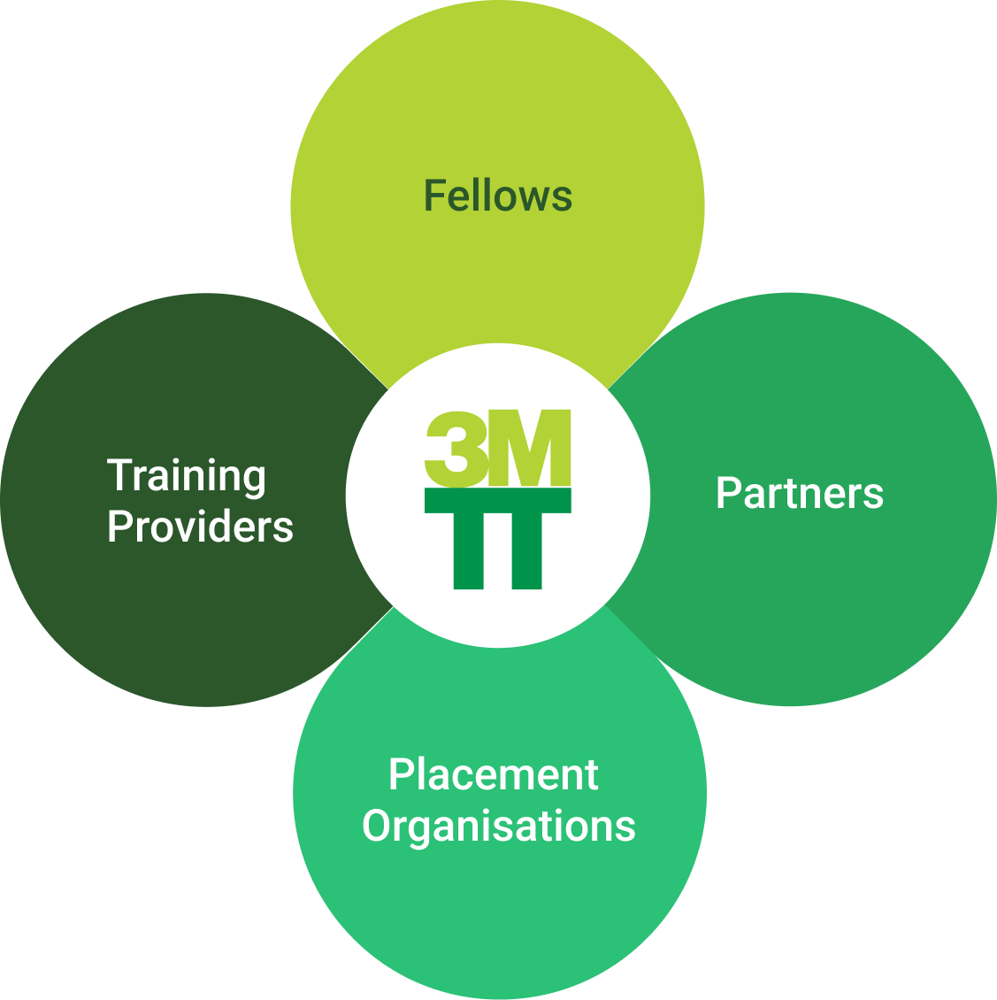
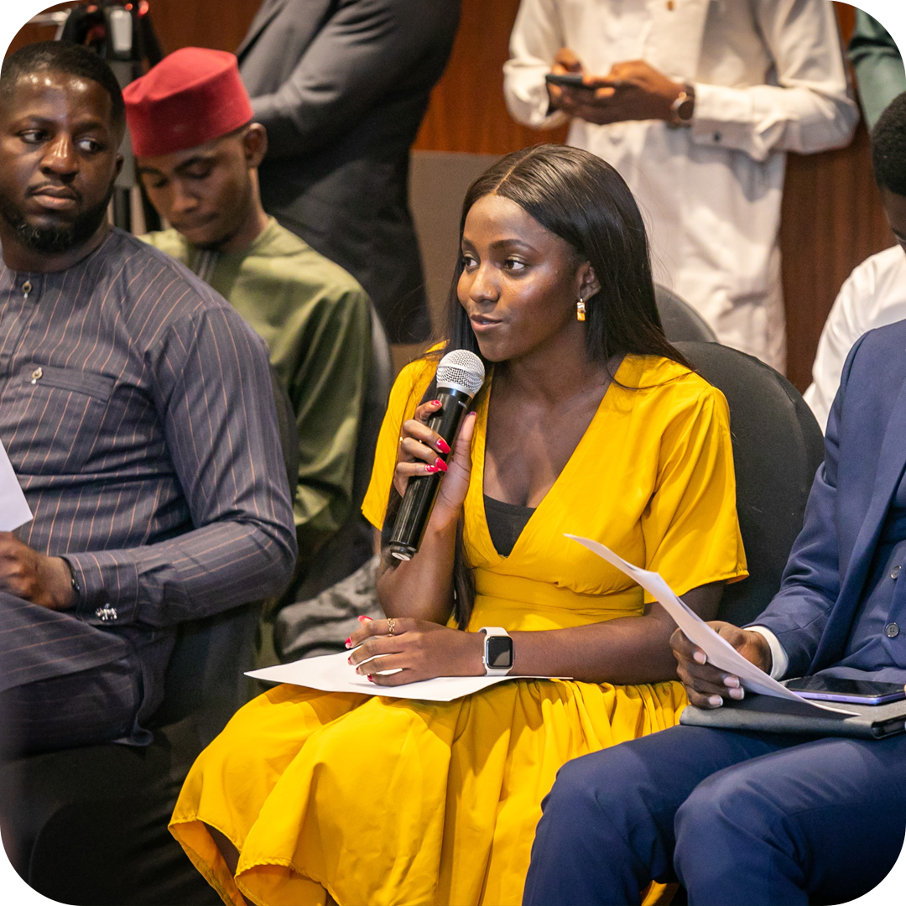
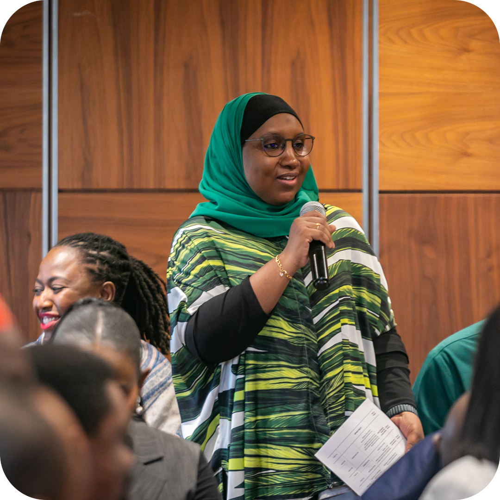

Introducing the 3 Million Technical Talent Program
Shaping the Future of Nigeria's Digital Workforce
The 3MTT programme by the Federal Ministry of Communications, Innovation & Digital
Economy will generate a pipeline of tecgnical talent in line with President Bola Ahmed
Tinubu's vision of creating 2 million digital jobs by 2025.
3MTT
The 3 Million Technical Talent(3MTT) programme, a critical
part of the Renewed Hope agenda, is aimed at building
Nigeria's technical talent backbone to power our digital
economy and position Nigeria as a net talent exporter, The
first phase of the programme, executed in collaboration with
NITDA, will involve multiple stakeholders, including fellows,
training providers, partners and placement organisations.

Join us on a transformative journey as we unviel the 3MTT Programme Fellowship
The first phase of the programme will be executed as a Fellowship medel in collaboration
with NITDA. We will select individuals with interest in specific skills and fund the cost
of their training with training providers accepted into the programme.


In line with the Ministry's 1%-10%-100% implementation approach
,this first phase will aim to train and place 30,000 technical talents, representing 1% of our overall target.
it will be executed based on the framework co-created with key stakeholders across government
agencies, training providers, educational institutions, development agencies and the private sector.
Skills in Focus
For the first, we will focus on these twelve (12) technical skills:
Software development
UI/UX Design
Data Analysis & Visualization
Quality Assurance
Product Management
Data Science
Animation
AI/Machine Learning
Cybersecurity
Game development
Cloud Computing
Dev Ops
Build the Workforce of the future
We are calling on individuals and training providers across Nigeria to apply to the first
phase of the 3MTT programme.
For fellows
You will receive training in specific technical skills that will empower you to be
competitive in the local and global technical talent marketplace
For Traininng providers
Organisations looking to join our pool of training providers to train 30,000 fellows across Nigeria as we design an optimal approach to training and placing technical talents
Come partner with us
Funders, Corporates, Placement Organisations & others looking to be part of the programme
FAQs
FAQs for Fellows
Are these the only skills thta will be covered in the programme?
How long will the programs in the phase run
Is physical attendance mandatory for the training sessions?
Will I be required to write an entry assessment?
Is there a commitment fee required for selection?
Will there be financial support for transport, meals and other services in addition to the training?< /span>
FAQs for training providers
Can Individual Trainers apply for this programme?
Can organisations without a physical facility apply to become training providers?
Can a training provider implement in more than one state?
Will the government solely be responsible for sourcing training fellows?
Is there a fee to be selected as a training provider?